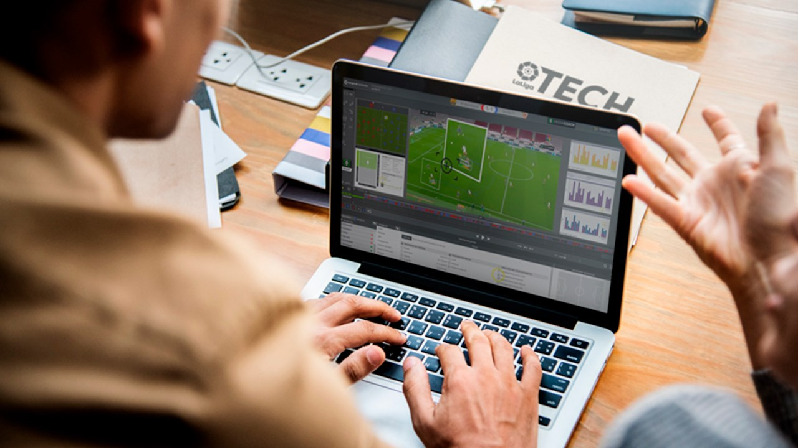
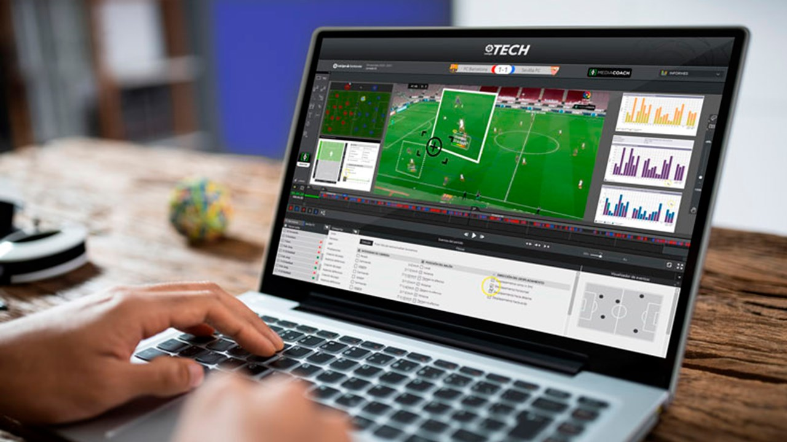

Welcome to FootTrack
Elevate Your Game with Advanced Analytics
FootTrack offers cutting-edge GPS tracking and analytics for football clubs and athletes
Discover FeaturesFootTrack App
Revolutionizing Football Analysis
FootTrack is a tablet app that allows the technical staff of La Liga's first and second division teams to view and analyze real-time and historical match and player statistics.
What Does the FootTrack App Offer?
Whether you're a football fanatic or not, you've probably seen the typical image of the assistant coach with a tablet. Ever wondered what's on that tablet? It's none other than the FootTrack App.
Cutting-Edge Video Analysis
The app is a next-generation video analysis solution designed by and for professional coaches of La Liga's 1st and 2nd divisions. It's the secret tool used by coaches, a powerful data and video analysis system that helps understand player limits better.
Immediate and Precise Information
A high-tech solution with numerous quantifiable and manageable parameters through a simple and intuitive interface.
Evaluate Performance
A solution that allows collecting physical and tactical data in real-time, to study our own team or the opponent.
Reports and Statistics Instantly
FootTrack generates videos, reports, and statistics easily and comprehensibly. Data can be exported to different formats, such as PDF or Excel.
Make the Best Decisions
Coaches and analysts have access to data from the entire competition, including pre and post-match analysis. Almost unlimited analysis possibilities to always make the best decision.
Decision-Making Dashboard
The coach, along with the tablet, has a dashboard for decision-making during the match. Thanks to FootTrack, analysts and technical members can save time when cutting match videos, with information before (FootTrack Desktop), during (FootTrack Live), and after the matches (FootTrack Portal).
Features
Powerful Tools for Performance
FootTrack offers cutting-edge features to analyze and improve player performance.

Real-time GPS Tracking
Monitor player movements and positioning during matches and training sessions with precision.

Performance Analytics
Gain insights into player speed, distance covered, acceleration, and other key metrics.
Tactical Analysis
Visualize team formations, player heat maps, and passing networks to optimize strategies.
Benefits
Unlock Your Team's Potential
FootTrack empowers coaches and players to achieve peak performance.

Injury Prevention
Monitor player workload and fatigue levels to reduce the risk of injuries and optimize recovery.

Data-Driven Decisions
Make informed choices about player selection, substitutions, and training plans based on objective data.
Testimonials
What Our Clients Say

"FootTrack has revolutionized our training approach. The insights we gain are invaluable for player development and match preparation."

"Using FootTrack has helped me understand my performance on a deeper level. I can see my progress and focus on areas for improvement."